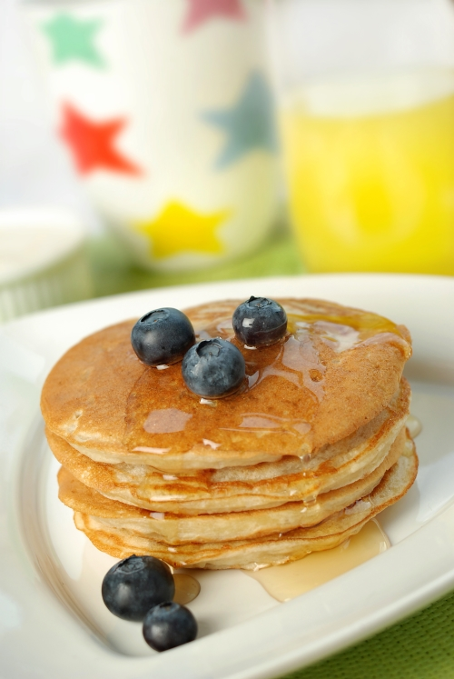
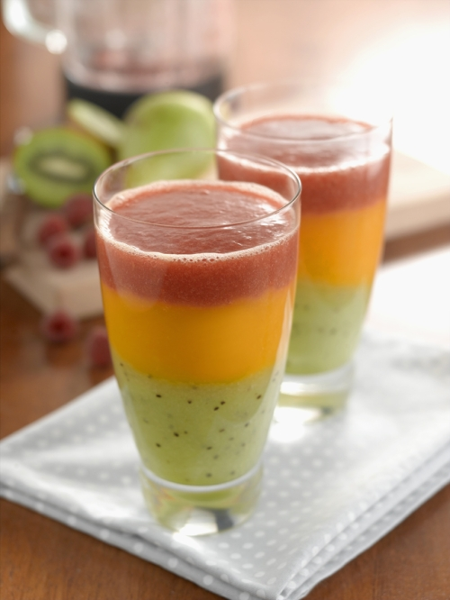
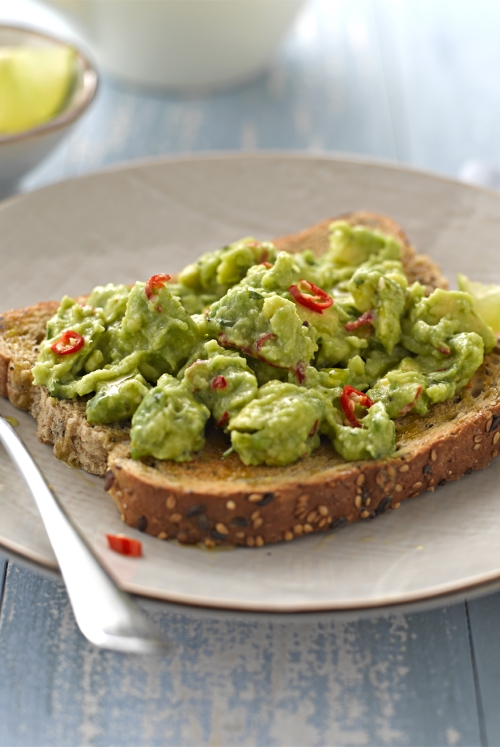
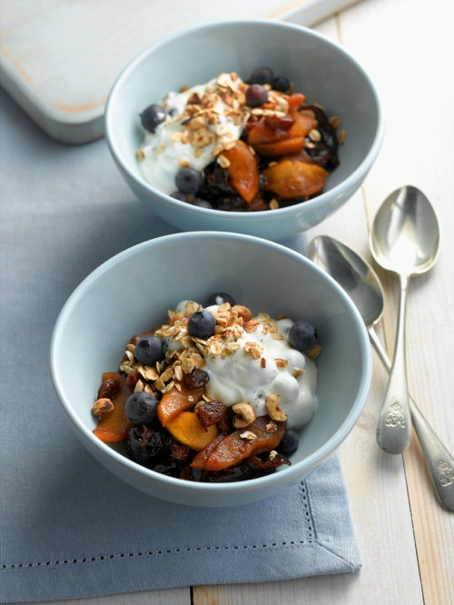

Breakfast Pancakes

Preparation notes
Serves 2
Preparation time 5 minutes
Cooking time 10 minutes
Ingredients
1 mug plain flour
1 tsp baking powder
1 mug soya milk
1 ripe banana
1 tbsp vegetable oil
Method
1. Mix the plain flour and baking powder in a large bowl.
2. Add the soya milk and a mashed ripe banana. Mix well with a wooden spoon.
3. Heat the vegetable oil in a frying pan and pour in a quarter of the mixture. When golden on the bottom, turn and cook the other side.
Serve immediately with maple syrup or fruit salad and plain soya yoghurt, soya cream or vanilla vegan ice cream.
Traffic Light Smoothie

Preparation notes
Serves 4
Preparation time 10 minutes
Ingredients
Green layer:
4 kiwi, peeled and chopped
1 pear, peeled and chopped
1/4 honeydew melon, sliced
150ml apple
Amber layer:
2 mangos, peeled and stoned
1/4 honeydew melon, sliced
100ml orange juice
Red layer:
200g strawberries
100g raspberries
1/4 honeydew melon, sliced
100ml cranberry juice
Method
1. Place the green layer into a blender and thoroughly whizz. Transfer to a separate jug and rinse out the blender.
2. Repeat with the remaining layers.
3. To serve, share the green layer between four glasses. Carefully spoon over the amber layer and finally the red layer. Serve straight away.
Avocado, Chilli and Lime on Toast

Preparation notes
Serves 2
Preparation: 5 mins
Cooking: 5 mins
Ingredients
2 medium avocados, peeled and stoned
1 small red chilli, finely chopped
10g fresh coriander, finely chopped
1 tsp lime juice
Pinch of salt
Pinch of ground black pepper
2 slices wholemeal or granary sliced bread
2 tsp olive oil
Method
1. Put the avocado flesh into a small bowl.
2. Add the chilli, coriander, lime juice, salt and pepper to the avocado then combine by gently mashing with a fork.
3. Toast the bread, and then drizzle each slice with the olive oil.
4. Top the two slices of toast with the avocado mixture and serve.
Breakfast Fruit Compote

Preparation notes
Serves 2
Preparation Time: 10 mins
Cooking Time: 25 mins
Ingredients
Compote:
2 apples, peeled, cored and sliced
200g ready to eat prunes, sliced
30g sultanas
200ml apple juice
Yoghurt mixture:
50g blueberries or blackberries (reserve a few for the topping)
200g zero fat Greek yoghurt (or soya yoghurt for vegan option*)
Topping:
75g oats
50g chopped hazelnuts
Pinch of nutmeg or cinnamon
Method
1. Place the compote ingredients into a large pan and gently simmer for 15 minutes, stirring occasionally.
2. Fold the blueberries into the yoghurt and set aside.
3. Place the oats, nuts and nutmeg or cinnamon into a non-stick pan. Gently heat for five minutes, stirring from time to time.
4. To serve, share out the fruit into four dishes, add a little yoghurt then top with the oat mixture and the reserved blueberries.